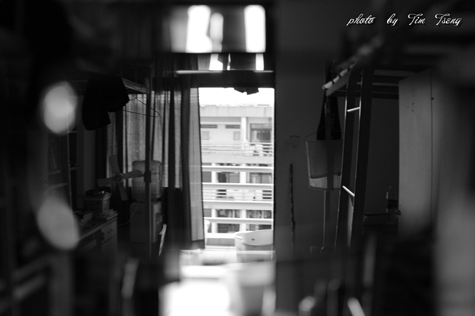
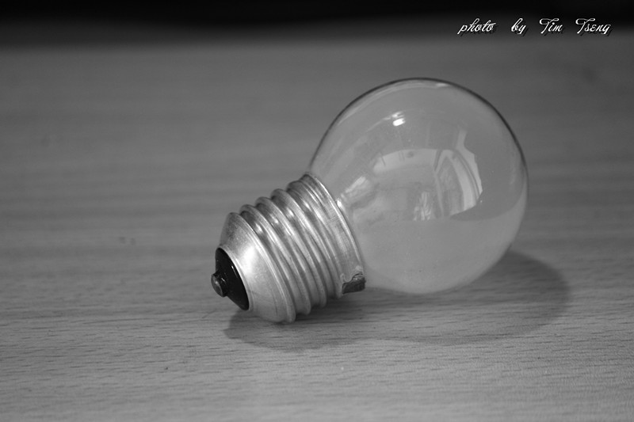
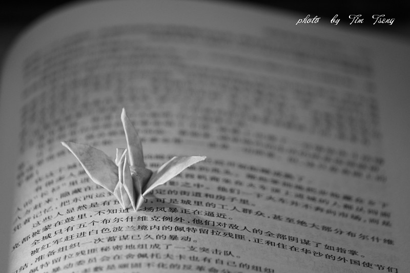
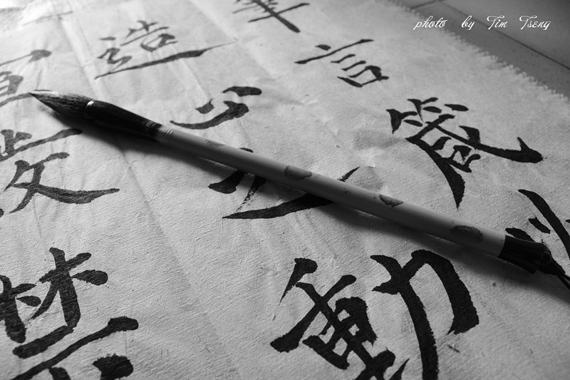
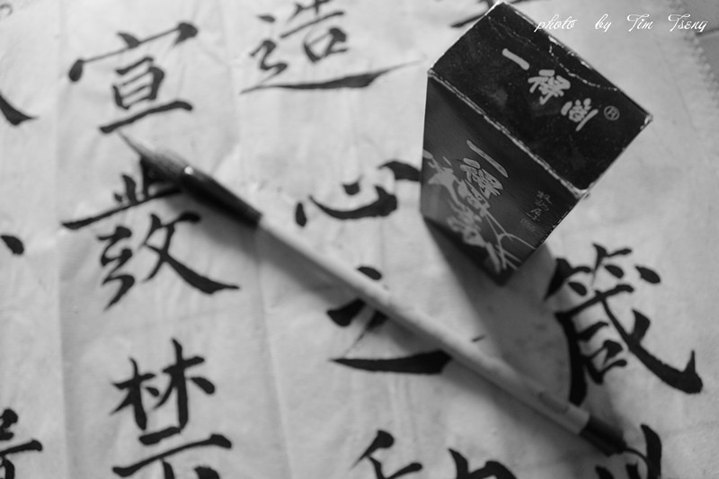
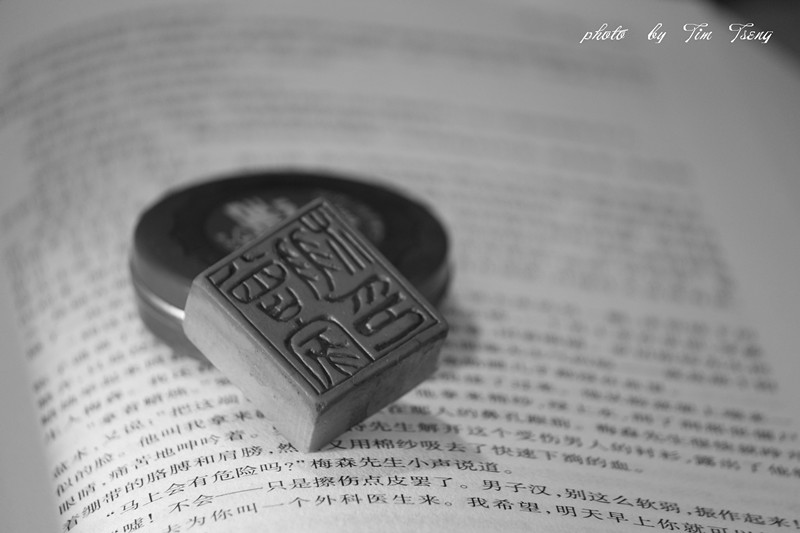
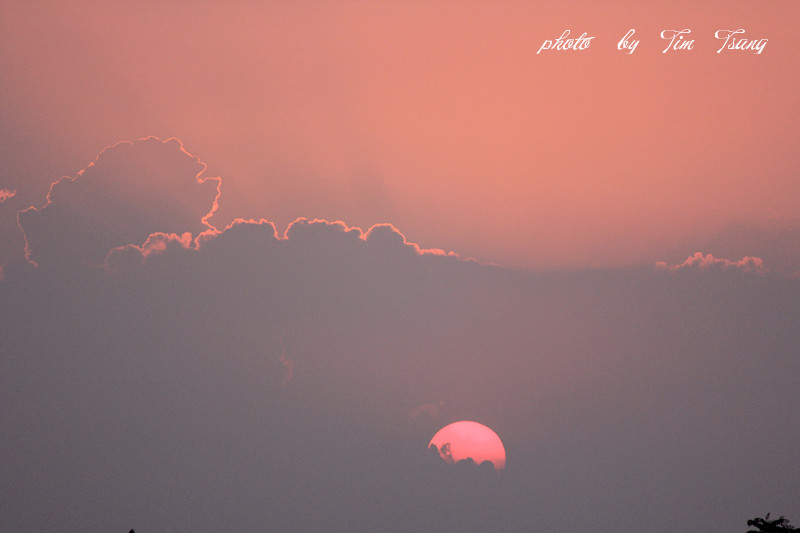
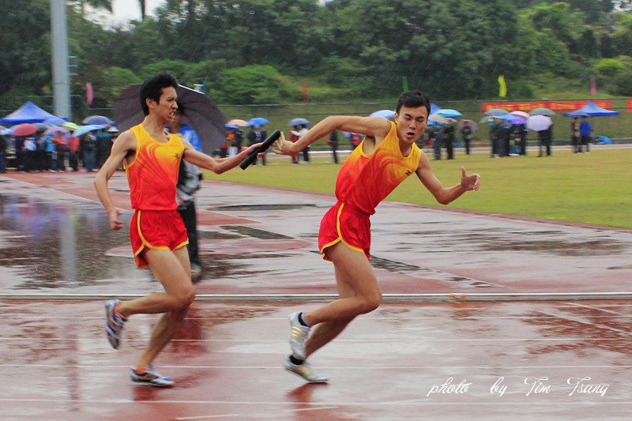
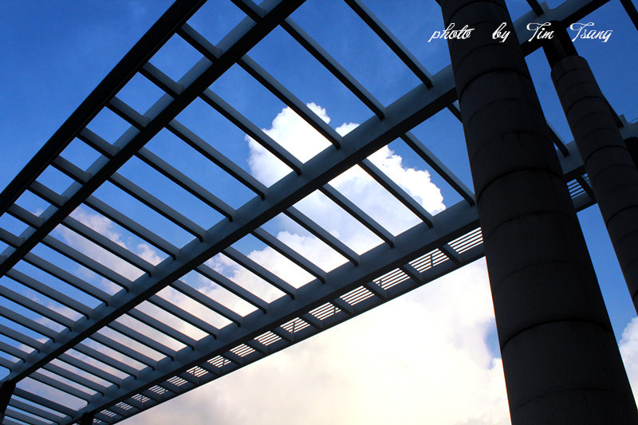
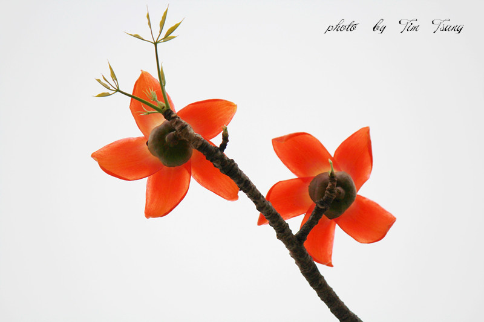

一、组图《忆•旧》
古语云：“物是人非事事休，欲语泪先流。”烟华易逝的往事，记忆斐然的画卷，过去的日子都如梦般在我们的脑海中若隐若现。总有一些事物会勾起我们对这些往事的怀念。

往事终成空，昨日的岁月都会成为过去，最终只能成为回忆，过去的每一秒都已经是过去。旧的回忆只能永远珍藏在我们的心底里，当前才是最重要的，珍惜现在，才能拥有更美好的回忆。
《忆旧之钨丝灯》

岁月无声暗流，时间在流逝，灯泡也在变化，过去的钨丝灯已经渐渐退出人们生活的舞台。
《忆旧之千纸鹤》

屈原有他的香草美人，曹植有他心中的洛神，陈子昂有他的幽州台，崔颢有他的黄鹤楼，柳永有他的杨柳岸......我们有我们自己独特的回忆，千纸鹤也是那美好的回忆之一。
《忆旧之书法》



依稀记得小的时候很喜欢书法，有时间就会拿起毛笔写字，每当心情不好时就想写字，每当拿起毛笔的时候，心情就会马上平静下来，顿时，心如止水，一切不好的心情都会烟消云散。
二、组图《夕•颜》
古语云：“夕阳无限好，只是近黄昏。”美好的一瞬间总是稍纵即逝。

三、《相信我》
该作品摄于广东工业大学运动会4*100接力赛最后一棒

四、《工大建筑》
该作品摄于广东工业大学正门

五、《木棉风车》
该作品摄于广东工业大学木棉花盛开之时
